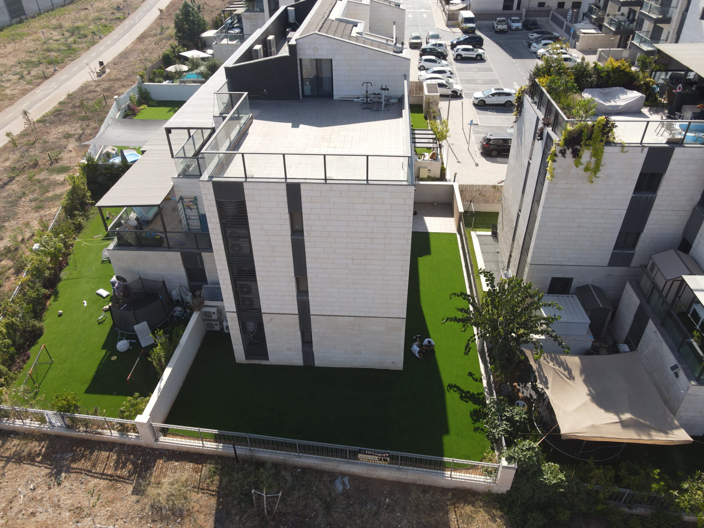

קצת על הבניין
בניין בוטיק בן 3 קומות. קומה ראשונה 4 דירות גן, קומה שנייה 2 דירות מיני פנטהאוז וקומה שלישית 2 דירות פנטהאוז. דירות הגן הן 4 חדרים, דירות המיני פנטהאוז הן 6 חדרים ודירות הפנטהאוז הן 5 חדרים. מ
הבניין הוא בניין שקט עם שכנים נחמדים ואיכותיים. בנוסף הבניין כולל דלת כניסה חכמה אשר נפתחת בצורה אוטומטית כשאשר אדם מתקרב אליה מתוך המבנה ומבחוץ נדרש קוד על מנת להכנס.מ
לבניין יש חנייה תת קרקעית ובנוסף חנייה חיצונית כאשר הכניסה לרחוב ניתנת אך ורק למי שגר בו
